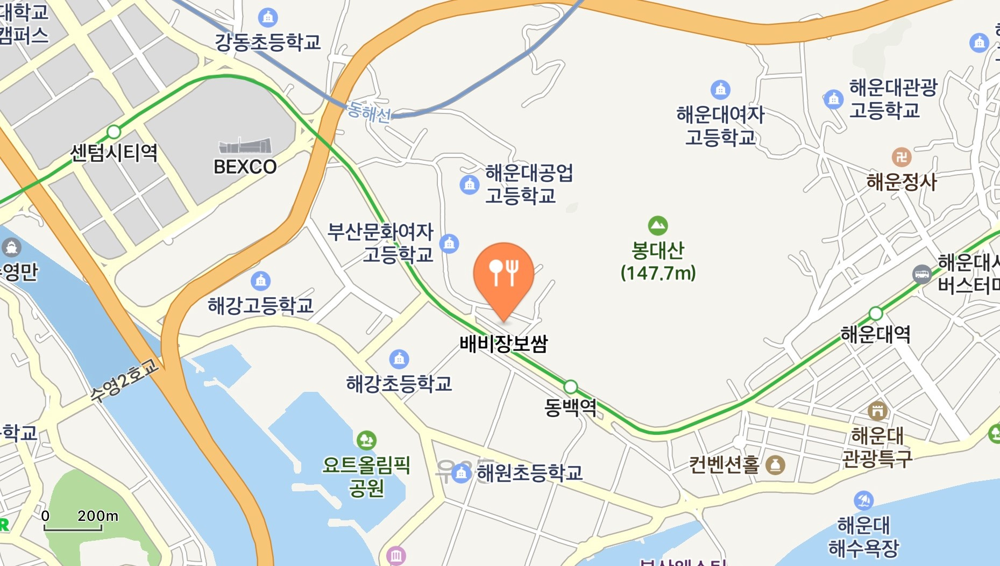
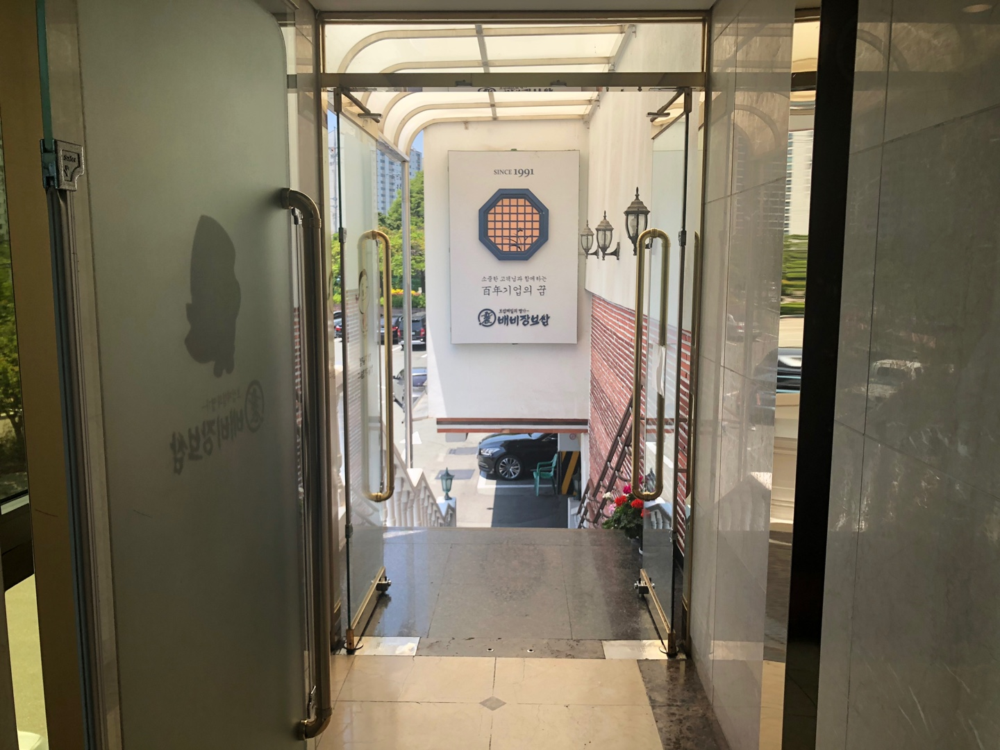
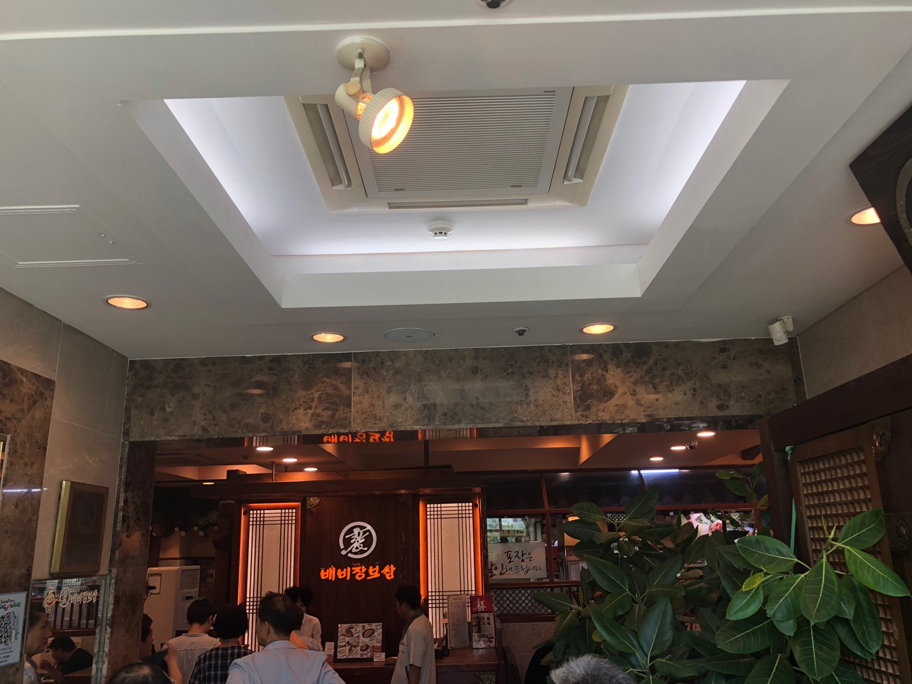
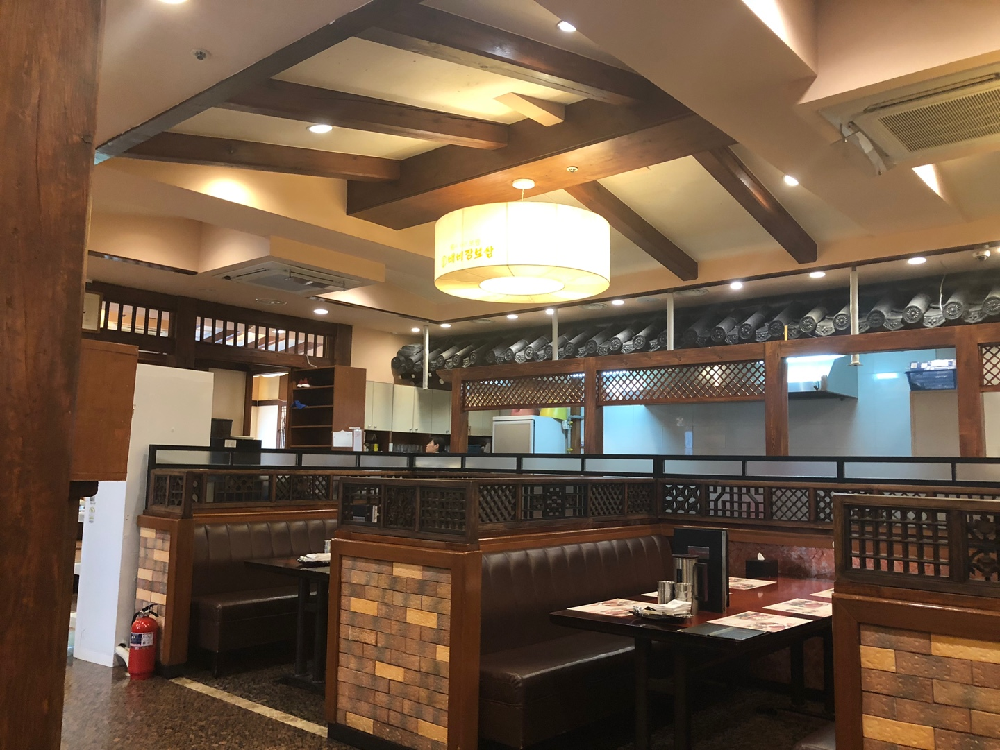
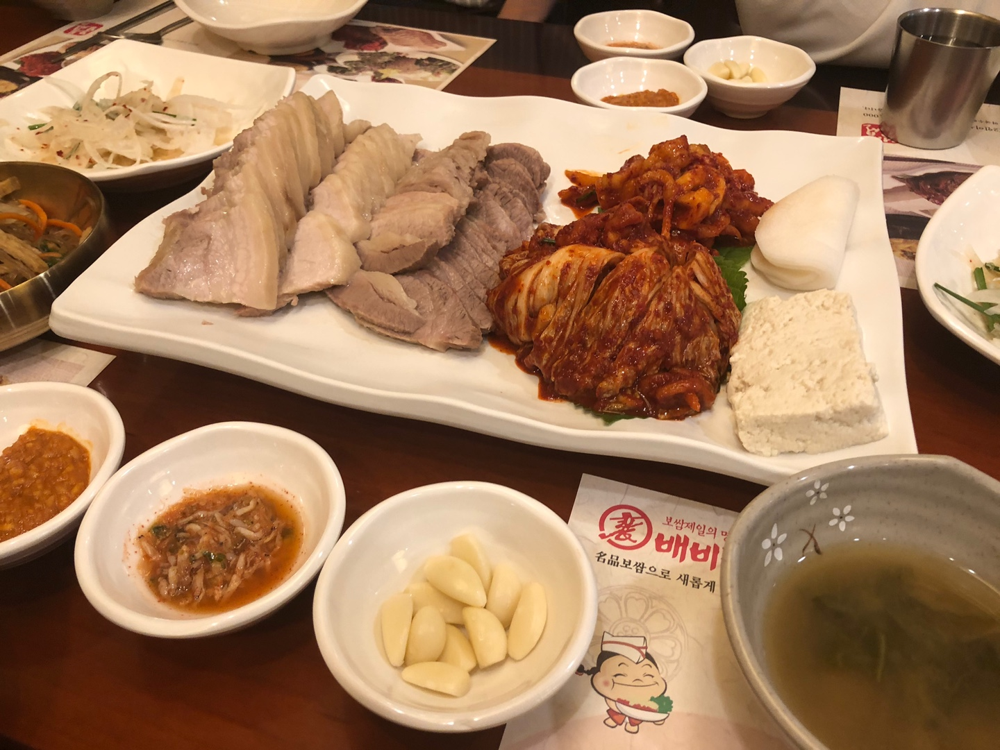

오늘의 맛집 탐방: 배비장보쌈
오늘의 추천 맛집은 베비장보쌈인데요. 먼저 베비장보쌈의 위치를 알아보겠습니다.

베미장보쌈의 위치입니다.



베미장보쌈의 내부 사진입니다. 오픈 시간은 11시 30분인데, 맛있다고 소문이 자자한 곳
이라 손님들이 12시쯤임에도 불구하고 손님들이 줄을 서 있었습니다. 다행히 저희는
11시 30분에 바로 가게 되어 기다림없이 자리에 앉았습니다.

점심특선인 보쌈 4인분이 나온 모습입니다. 1인분에 15,000원이라는 다소 비싼 가격이라 아쉬웠지만,
친절한 서비스와 질높은 고기가 아쉬움을 달래줬습니다.
가족들을 모시고 오는 손님이 많았는데, 다음에는 저도 가족들을 모시고 와야겠다는 생각을 하였습니다.

고기를 어느정도 먹고 난 뒤, 막국수가 나왔습니다. 막국수 또한 보쌈의 맛에 뒤쳐지지 않는
고소한 맛이 일품이였습니다.
기대했던만큼 아주 맛있는 보쌈집이였습니다. 하지만 조금 아쉬웠던 점이 있다면 다소 비싼 가격이라,
학생들이 먹기엔 부담스러울 수 있다는 점이였습니다. 그것만 빼면 나머지는 다 만족스러웠기에 평점은 별
5점에 4점입니다.